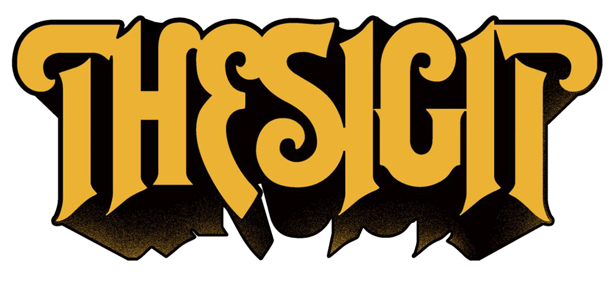
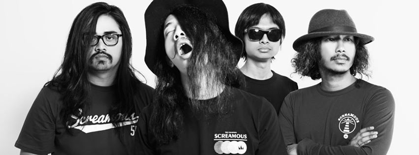
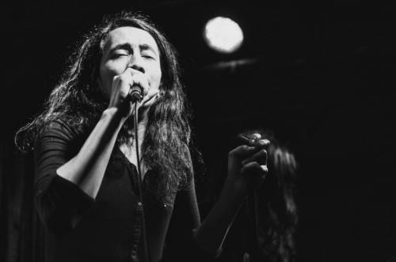

|
THE SIGIT merupakan band indie asal Bandung , yang dibentuk pada tahun 1997 ketika para personelnya masih duduk di bangku SMA. Nama THE SIGIT itu sendiri baru dipakai pada tahun 2002. Pada tahun 2004 mereka meluncurkan mini album yang berjudul "EP" berisi 6 lagu. THE SIGIT memanfaatkan situs jejaring sosial seperti myspace, friendster, facebbok, bebo, dll. unutk mengenalkan lagu-lagu mereka ke seluruh dunia. Akhirnya lewat internet pula mereka ditemukan oleh salah satu pemilik label di Australia yang kemudian menawari band ini unutk membuat album THE SIGIT versi Australia.  THE SIGIT baru dikenal oleh masyarakat luas setelah membuat lagu untuk soundtrack sebuah film "Catatan Akhir Sekolah" dengan lagu "Did I Ask Your Opinion". THE SIGIT bukanlah nama dari seorang personilnya atau singkatan dari nama para personilnya, namun THE SIGIT merupakan singkatan dari "The Super Insurgent Group of Intempreance Talent". Mari menyimak kisah Rekti Yoewono tentang hal yang mendorong dirinya menamakan band-nya THE SIGIT. : "Awalnya itu, saya kalau lagi nggak ada kerjaan, kalau lagi di internet suka ke Google, iseng nyari nama sendiri "Rekti" kalau di luar apa ya?," tutur vokalis-gitaris berusia 25 tahun ini. "Terus ngetik nama bapak saya, Sigit. Terus ternyata, Sigit.com itu Science Interest Group anjing, keren juga ya. Jadi gue cari kata-kata sendiri.". Cerita itu dapat mewakili sisi intelek sekaligus humoris yang terdapat pada The Super Insurgent Group of Intempreance Talent, kuartet asal Bandung yang menggabungkan tema lirik yang kontemplatif dengan musik rock 'n roll primitif, di mana Led Zeppelin, The Clash dan The Beatles menjadi pengaruh utama yang menyatukan selera keempat sahabat ini. " I dont't know if I should " THE SIGIT - Conundrum Band yang mengusung garage rock dengan tampilan seadanya yang dibentuk ketika zaman sekolah setingkat SMP antar teman saling bertemu diantaranya yaitu Rekti, Adit, dan Acil yang kemudian membentuk sebuah band yang mengusung ciri khas dengan sound dari mulai The Stone Rosescsampai dengan Led Zeppelin, dimana personil band yang selama itu ada saling berganti, ada yang datang ada yang pergi, dengan, kemudian pada tahun 2002, Farri datang ke dalam band, dengan kemampuannya dalam reccording dan arrangging dimulailah mereka untuk menciptakan lagunnya mereka. Mereka berasal dari perguruan tinggi di Bandung. Rekti saat ini sedang menyelesaikan S2 di Teknik Lingkungan ITB, Adit sarjana IT dari Universitas Maranatha Bandung. Achiel Sarjana S1 Arsitektur Universitas Parahyangan, sementara Farri sedang studi S2 di jurusan Arsitek ITB.  Achiel A.K.A Donar Armando Ekana menjelaskan kenapa bahasa inggris yang mereka pakai dalam kata-kata di liriknya karena mereka ingin beda, dan sederhannya mereka lebih senang main dengan kata-kata bahasa Inggris. "Kalau Bahasa Inggris lebih mudah mendapat gabungan kata dan maknanya lebih dalam," ujarnya. Butuh waktu nyaris tujuh tahun bagi THE SIGIT untuk merilis album penuh keduannya setelah Visible Idea of Perfection. Akhirnya THE SIGIT merilis album baru ber-title Detourn pada 16 Maret 2013, seperti diumumkan pada situs resmi mereka. Anggota Band : - Rektivianto Yoewono a.k.a Rekti (Vokal & Guitar) - Farri Icksan Wibisana a.k.a Farri (Guitar) - Aditya Bagja Mulyana a.k.a Adit (Bass) - Donar Armando Ekana a.k.a Acil (Drum) |